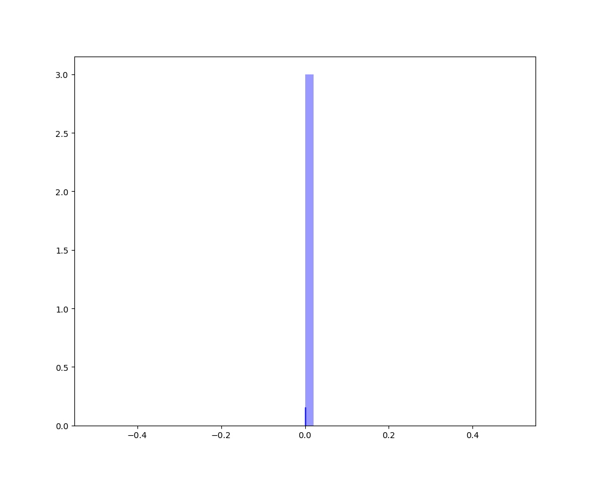
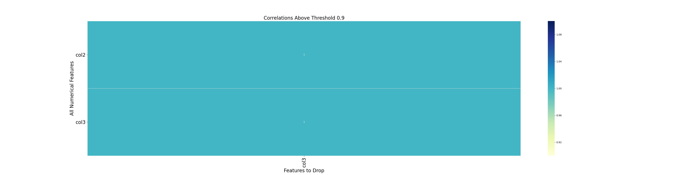
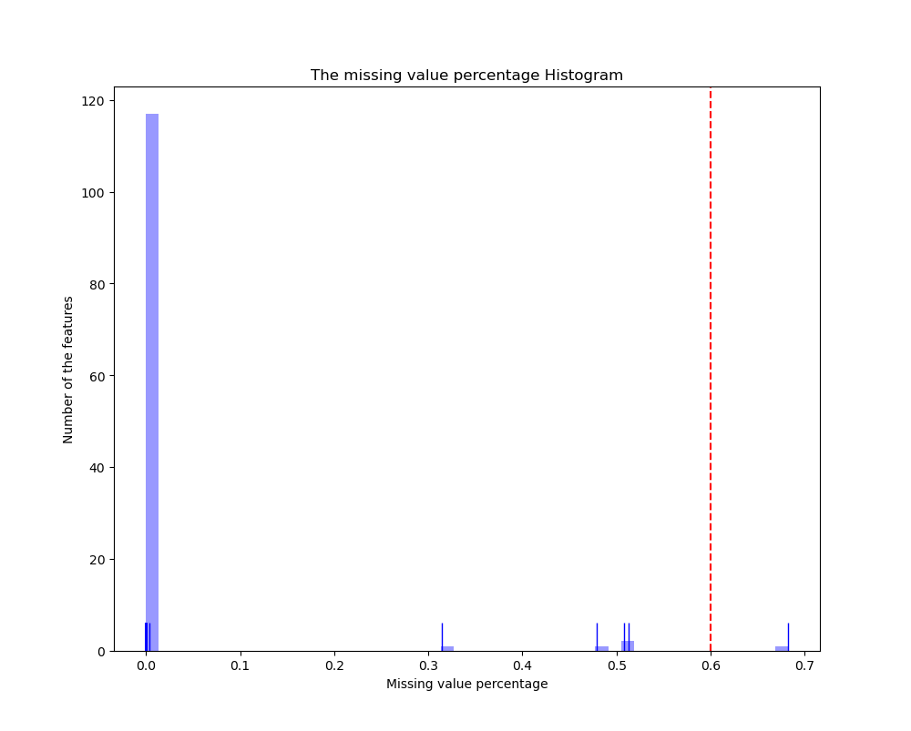
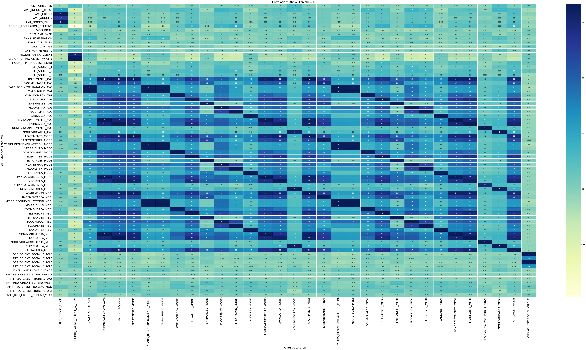

4. AutoFeatures Demos¶
The following demos are designed to show how to use AutoFeatures to select proper features.
4.1. AutoFeatures Essential Drop¶
For example:
# simple test
from pyspark.sql import SparkSession
spark = SparkSession \
.builder \
.appName("Python Spark regression example") \
.config("spark.some.config.option", "some-value") \
.getOrCreate()
my_list = [('a', 2, 3),
('b', 5, 6),
('c', 8, 9),
('a', 2, 3),
('b', 5, 6),
('c', 8, 9)]
col_name = ['col1', 'col2', 'col3']
df = spark.createDataFrame(my_list, schema=col_name)
from AutoFeatures import AutoFeatures
df.show()
Fs = AutoFeatures()
indexCol = []
labelCol = []
to_drop = Fs.essential_drop(df, index_col=indexCol, label_col=labelCol, missing_thold=0.68, corr_thold=0.9,
method="pearson", rotation=True, display=True, tracking=True, cat_num=2)
print('essential dropped features:{}'.format(to_drop))
Result:
+----+----+----+
|col1|col2|col3|
+----+----+----+
| a| 2| 3|
| b| 5| 6|
| c| 8| 9|
| a| 2| 3|
| b| 5| 6|
| c| 8| 9|
+----+----+----+
Unique selector took = 6.319664716720581 s
Missing selector took = 17.472286224365234 s
Correlation selector took = 28.78574252128601 s
The essential selector took = 65.23012638092041 s
essential dropped features:['col3']


4.2. AutoFeatures Ensemble Drop¶
For example:
from pyspark.sql import SparkSession
spark = SparkSession \
.builder \
.appName("Python Spark regression example") \
.config("spark.some.config.option", "some-value") \
.getOrCreate()
# from PySparkAudit import dtypes_class, hist_plot, bar_plot, freq_items,feature_len
# from PySparkAudit import dataset_summary, rates, trend_plot
# path = '/home/feng/Desktop'
from AutoFeatures import AutoFeatures
# load dataset
data = spark.read.csv(path='../data/credit_example.csv',
sep=',', encoding='UTF-8', comment=None, header=True, inferSchema=True)
data = data.fillna(0)
print(data.toPandas().head(5))
indexCol = 'SK_ID_CURR'
labelCol = 'TARGET'
task = 'classification'
Fs = AutoFeatures()
# correlation selector
to_drop = Fs.corr_selector(data, index_col=indexCol, label_col=labelCol,
corr_thold=0.9, method="pearson", rotation=True,
display=False, tracking=False, cat_num=2)
print('corr_selector::{}'.format(to_drop))
# essential selector (included: missing selector, unique selector, correlation selector)
to_drop = Fs.essential_drop(data, index_col=indexCol, label_col=labelCol,
missing_thold=0.6, corr_thold=0.9, method="pearson", rotation=True,
display=True, tracking=True, cat_num=2)
print('essential_drop::{}'.format(to_drop))
# ensemble selector (ensemble selector is based on essential selector.)
to_drop = Fs.ensemble_drop(data, index_col=indexCol, label_col=labelCol, task=task, tracking=True)
print('ensemble_drop::{}'.format(to_drop))
Result:
SK_ID_CURR TARGET ... AMT_REQ_CREDIT_BUREAU_QRT AMT_REQ_CREDIT_BUREAU_YEAR
0 247408 0 ... 0.0 1.0
1 153916 0 ... 0.0 0.0
2 229065 0 ... 0.0 7.0
3 282013 0 ... 0.0 1.0
4 142266 0 ... 1.0 1.0
[5 rows x 122 columns]
and
